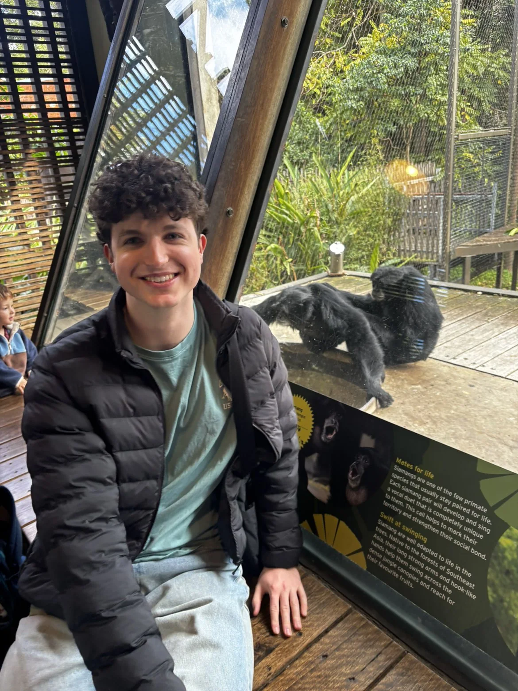
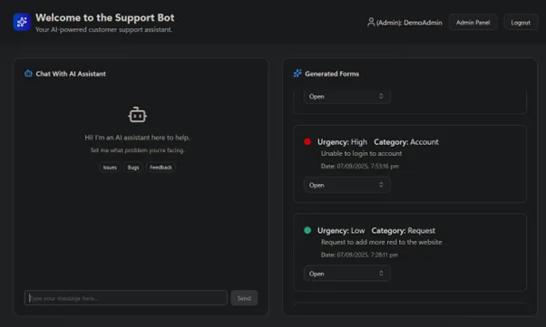

I've built AI systems that assess insurance claims in production at Suncorp, and shipped AI into small startup teams. Recent UQ computer science graduate, ML major.

Software Engineer · Brisbane
Software Engineering Intern · Brisbane
BCompSc · Machine Learning major

An agentic chatbot that logs forms straight from a user request. Semantic Kernel manages the agents, SignalR carries the real-time form and admin traffic.
I work on post-lodgement claims processing: the point where a claim stops being paperwork and becomes an assessor's queue. That covers LLM orchestration, agent tooling and the pipeline that takes a claim from lodged to assessed and allocated.
Outside work I build machine learning projects, fullstack apps and a growing pile of home-lab infrastructure. Lately the hobby of choice is game development in Godot, mostly for the fun of watching physics misbehave.